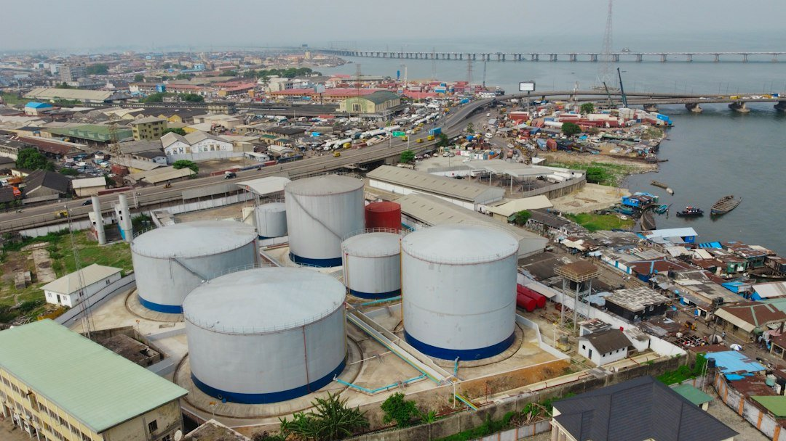

ByEirini Diamantara&Dimitris Roumeliotis
The latest developments in US–Russian energy relations could mark another turning point for the product tanker market, as Washington's decision to temporarily ease sanctions on Russian diesel opens the door to renewed trade flows between two countries whose energy relationship has been severely restricted since 2022. According to Russian Deputy Prime Minister Alexander Novak, the first diesel cargo of approximately 40,000 mt is scheduled to depart Russia's Baltic coast on October 22, with Moscow targeting 300,000 mt of shipments to the US during October and a further 500,000 mt in November. Beyond the political significance, this development raises important questions regarding Atlantic product tanker demand, vessel availability and the potential redistribution of established trading patterns.
Interestingly, maritime trade in petroleum products between Russia and the US has diminished significantly following Russia's invasion of Ukraine in February 2022, but has never completely disappeared. On 2020 and 2021 the seaborne trade of oil products from Russia to USA was around 23 million mt annually. Based on Signal Ocean data, during 2023, recorded shipments reached approximately 1.33 million mt, declining to 1.06 million mt in 2024, before recovering to 1.28 million mt in 2025. During January–June 2026, volumes totalled 510,000 mt, compared to 727,000 mt during the corresponding period of 2025, representing a contraction of almost 30%. July recorded no shipments, highlighting the weakening momentum before the latest diplomatic developments. These figures suggest that the announced reopening should be viewed not simply as the restoration of previously interrupted trade, but as a potential expansion and restructuring of existing flows, particularly concerning diesel.
From a shipping perspective, the implications could be particularly interesting for the MR segment. The initial 40,000 mt cargo fits comfortably within MR2 employment, while the proposed 500,000 mt November programme could theoretically generate around 10–13 MR-sized cargoes, depending on parcel sizes. More importantly, shipments from Russia's Baltic terminals towards the US Atlantic coast would introduce additional employment opportunities into a market already experiencing significant volatility. However, the actual benefit will depend on whether these shipments represent genuinely additional demand or simply replace diesel currently sourced from Northwest Europe, Canada and South Korea. In the latter case, the redistribution of existing cargoes could still reshape vessel positioning and regional freight differentials. Another important consideration is the current competition between clean and dirty tanker markets. With crude tanker earnings remaining exceptionally attractive, several LR vessels have shifted towards crude transportation, reducing the effective availability of tonnage dedicated to refined products. Returning these vessels to clean trading is neither immediate nor straightforward, as tank cleaning and preparation require additional time and costs. Consequently, renewed Russian diesel movements could arrive at a particularly favourable moment for MR owners, especially if increased Atlantic demand coincides with limited LR participation in the clean market.
Nevertheless, Russia's ability to deliver the announced volumes remains uncertain. Ukrainian attacks against Russian refineries have constrained production and export capacity, while Moscow's own restrictions on diesel exports underline the importance of protecting domestic supply. Although Novak anticipates a recovery towards the country's traditional 3.5 million mt monthly diesel export capacity by year-end, actual shipments will depend heavily on refinery operations and logistical availability. Ultimately, the significance of this agreement extends beyond the initial cargoes. With gasoil prices remaining elevated and geopolitical disruptions continuing to reshape energy flows, even relatively modest changes in trade policy can influence vessel utilisation and freight sentiment. For product tanker owners, the key question is whether this reopening develops into a sustained Atlantic trade corridor. Should Russian export capacity recover while LR vessels remain attracted to the crude market, MR tankers could emerge as important beneficiaries of another geopolitical reshuffling of global petroleum trade.
Data source:Xclusiv Shipbrokers Inc.